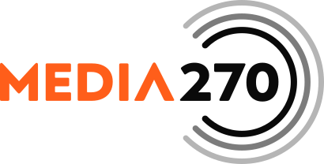

Gizlilik Politikası
Bu sayfa, Media270'in (İstanbul, mobil LED ekranlı araç reklamcılığı) media270.com sitesi, müşteri portalı ve iç yönetim paneli ile Meta (Instagram, Facebook, WhatsApp) ve Google hizmetleri üzerinden gelen mesajları nasıl işlediğini açıklar.
Hangi verileri işliyoruz
- İletişim bilgileri: Bize e-posta, telefon, WhatsApp, Instagram mesajı veya yorumuyla ulaştığınızda adınız, kullanıcı adınız, iletişim bilginiz ve mesajınızın içeriği.
- Teklif ve kampanya bilgileri: Rezervasyon, teklif, fatura ve kampanya raporu için gereken firma ve kişi bilgileri.
- Herkese açık işletme verileri: Instagram'daki herkese açık işletme ve içerik üreticisi hesaplarının profil bilgileri ve paylaşımları (takipçi sayısı, paylaşım metni gibi). Kişisel hesapların verilerini toplamıyoruz.
Verileri ne için kullanıyoruz
- Mesajlarınızı yanıtlamak, teklif hazırlamak ve kampanyanızı yürütmek.
- Pazar araştırması: hangi markaların lansman, etkinlik veya fuar planladığını takip etmek.
- Yasal yükümlülükler (fatura, muhasebe kayıtları).
Verilerinizi satmıyoruz ve reklam amacıyla üçüncü kişilerle paylaşmıyoruz. Size, sizin başlatmadığınız otomatik mesaj göndermiyoruz; her yanıtı ekibimizden biri onaylar.
Verileri nerede saklıyoruz
Veriler, erişimi yalnız Media270 ekibine açık, şifreli bağlantıyla korunan yönetim panelimizde (Supabase altyapısı) saklanır. Meta ve Google'dan alınan erişim anahtarları şifreli kasada tutulur. Veriler, iş ilişkisi ve yasal saklama süreleri boyunca tutulur, sonra silinir.
Hizmet sağlayıcılar
Hizmeti yürütmek için Meta Platforms (Instagram, Facebook, WhatsApp), Google (Gmail), Supabase (veritabanı), Vercel (barındırma) ve Anthropic (mesaj taslağı hazırlamada yardımcı yapay zekâ) hizmetlerini kullanıyoruz. Bu sağlayıcılar verileri yalnız bizim adımıza işler. Sunucuları yurt dışında (AB/ABD) olduğundan veriler KVKK md. 9 kapsamında yurt dışına aktarılır.
Yapay zekâ, gelen mesajın konusunu belirlemek ve bir cevap taslağı önermek için kullanılır; size kendi başına mesaj göndermez ve sizin hakkınızda karar vermez. Mesajlarınızın yapay zekâ ile işlenmesini istemiyorsanız aşağıdaki adrese yazmanız yeterlidir; bu durumda mesajlarınızı yalnız ekibimiz işler.
Verilerinizin silinmesi
Bize ait sistemlerdeki verilerinizin silinmesini istediğinizde:
- teklif@media270.com adresine “Veri silme talebi” konulu bir e-posta gönderin.
- E-postada bize hangi kanaldan ulaştığınızı (ör. Instagram kullanıcı adınız, telefon numaranız veya e-posta adresiniz) belirtin.
- Talebinizi en geç 30 gün içinde yerine getirir ve size yazılı olarak bildiririz. Yasal olarak saklamak zorunda olduğumuz kayıtlar (ör. faturalar) bu süre dolana kadar saklanır.
Facebook veya Instagram hesabınızın Media270 uygulamasıyla bağlantısını, hesabınızın Ayarlar > Uygulamalar ve web siteleri bölümünden de kaldırabilirsiniz.
Haklarınız
6698 sayılı Kişisel Verilerin Korunması Kanunu kapsamında verilerinize erişme, düzeltilmesini veya silinmesini isteme ve işlenmesine itiraz etme haklarınız vardır. Bu haklar için yukarıdaki e-posta adresine yazabilirsiniz. Ayrıntılı KVKK aydınlatma metnimiz hazırlandığında bu sayfadan bağlantı verilecektir.
İletişim
Media270 · İstanbul · teklif@media270.com